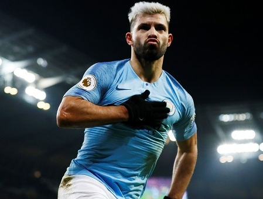
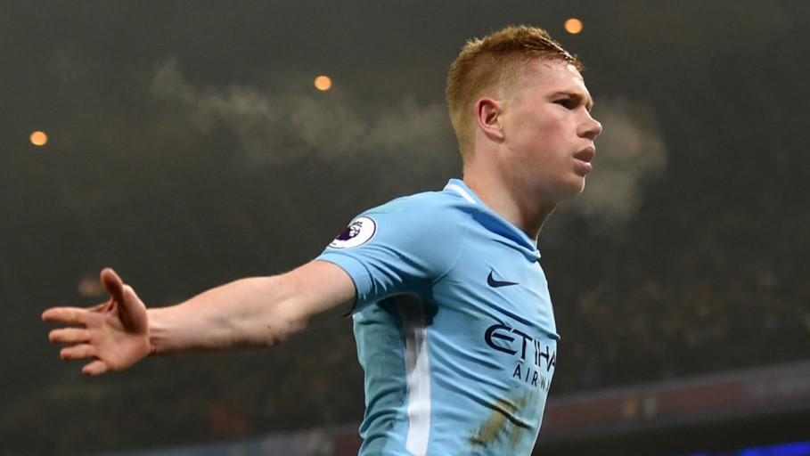
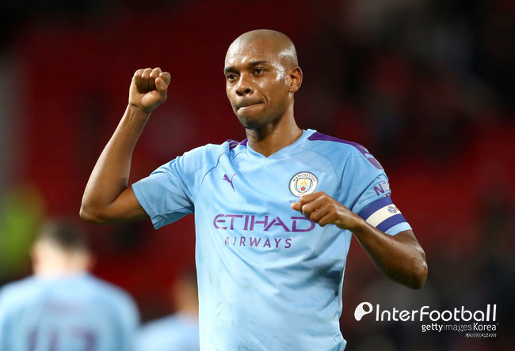
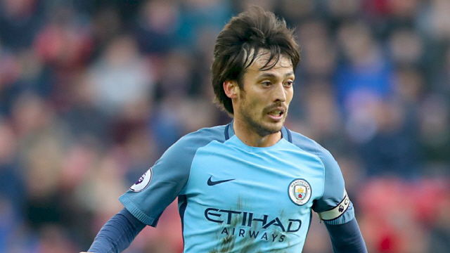
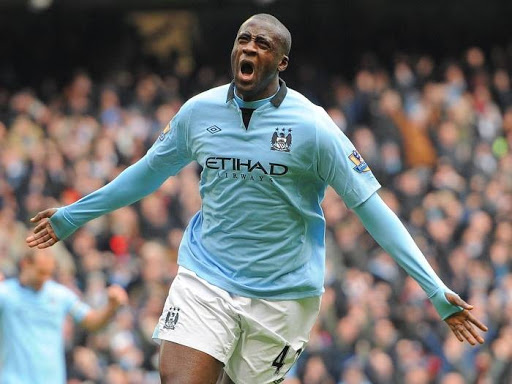
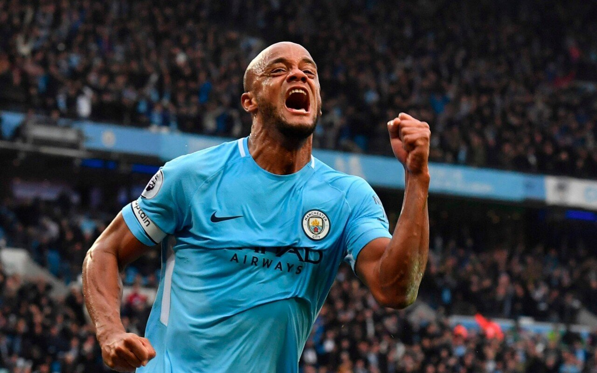
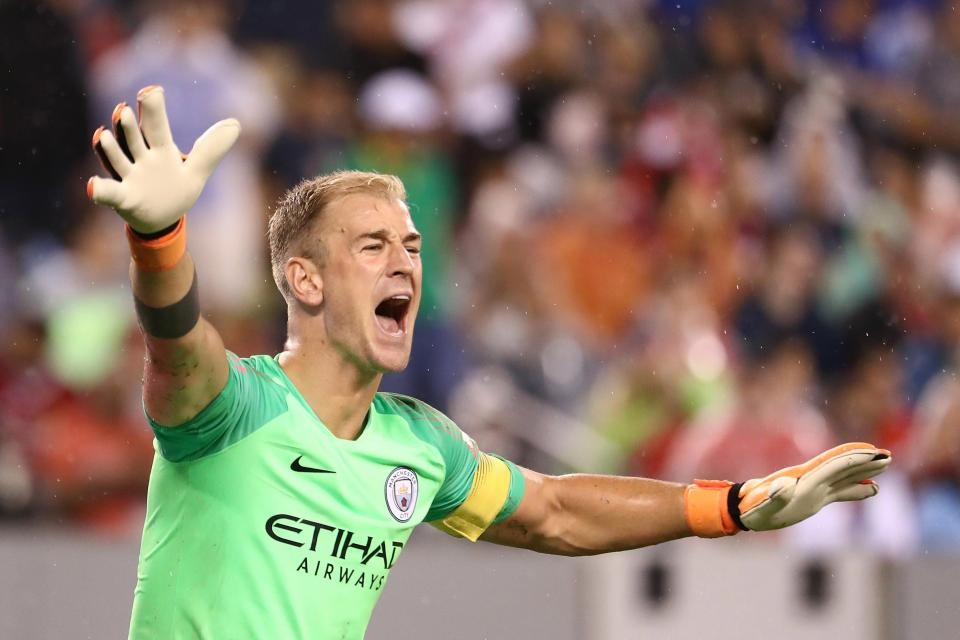

맨시티 레전드 선수
세르히오 아구에로

아르헨티나 국적의 맨체스터 시티 FC 소속 축구 선수이자 트위치 스트리머. 포지션은 스트라이커[14]이다.
맨체스터 시티 역사상 최다 득점 선수이자 프리미어 리그 최다 득점 외국인 선수[15]이며, PL 단일 클럽 최다골[16] , 프리미어 리그 최다 해트트릭 기록을 보유한 전설적인 공격수이다.
조 하트, 야야 투레, 다비드 실바, 페르난지뉴, 뱅상 콩파니와 함께 2010년대 맨체스터 시티를 상징하는 구단 역사상 가장 위대한 스트라이커이다.
케빈 더브라위너

벨기에 국적의 맨체스터 시티 FC 소속 축구 선수. 포지션은 중앙 미드필더와 공격형 미드필더[9]이다.
VfL 볼프스부르크에서 분데스리가 MVP[10]와 도움왕에 올랐고, 맨체스터 시티로 이적하여 3회의 프리미어 리그 우승을 이끌며 PFA 올해의 선수와 UEFA 올해의 미드필더, 그리고 PL 도움왕 3회를 차지하였다.[11] 또한 벨기에 대표팀에서도 2018년 월드컵 도움왕에 오르며 조국의 3위에 기여했다.
뱅상 콤파니, 다비드 실바, 세르히오 아구에로의 뒤를 잇는 맨체스터 시티의 상징이자 리빙 레전드이다
페르난지뉴

브라질 국적의 맨체스터 시티 FC 소속 축구 선수. 포지션은 수비형 미드필더이다.
펩 과르디올라 부임 전후로 팀의 언성히어로로 맹활약 하면서 맨체스터 시티 팬들에겐 세르히오 아궤로, 조 하트, 다비드 실바, 야야 투레, 뱅상 콤파니 등과 함께 맨체스터 시티의 레전드로 꼽히는 선수
다비드 실바

스페인 국적의 레알 소시에다드 소속 축구선수. 포지션은 중앙 미드필더이다.
세르히오 아궤로, 조 하트, 야야 투레, 뱅상 콩파니, 페르난지뉴와 함께 2010년대 맨체스터 시티의 전성기를 상징하는 인물이자 프리미어리그의 레전드. 국가대표팀에서는 스페인 황금세대의 주축 중 한 명으로 유로 2008과 유로 2012에서 주전으로 활약[10]하며 조국의 우승을 이끌었다.
야야 투레

코트디부아르의 축구선수. 포지션은 중앙 미드필더이다.
2010년대 초반부터 중반까지 세르히오 아궤로, 조 하트, 다비드 실바, 페르난지뉴, 뱅상 콤파니와 함께 맨체스터 시티 FC의 핵심 자원으로 활약하면서 맨시티의 전성기를 열었던 선수다.
뱅상 콤파

브뤼셀 태생이며 포지션은 센터백이다. 잦은 부상으로 인해 많은 경기를 소화하지 못했음에도, 2010년대 프리미어 리그 최고의 센터백 중 한 명이자
세르히오 아구에로, 조 하트, 다비드 실바, 야야 투레, 페르난지뉴와 함께 맨체스터 시티의 레전드로 평가 받는 선수이다
조 하트

잉글랜드 국적의 골키퍼. 현재 소속은 토트넘 홋스퍼 FC이다.
2000년대 후반부터 2010년대 중반까지 맨체스터 시티를 대표하는 주전 수문장으로서 활약하며 같은 기간 동안에 잉글랜드 축구 국가대표팀의 주전 수문장으로도 활약했다. 그러나 2016년 하반기부터 계속된 기량 저하로 인해, 현재는 예전의 모습을 보이지 못하고 있다. 최근 토트넘 홋스퍼 FC이적 후 유로파리그에서 많은 출전시간을 부여 받고있다.[1]
프리미어 리그 올타임 최다 골든글러브 수상자[2].